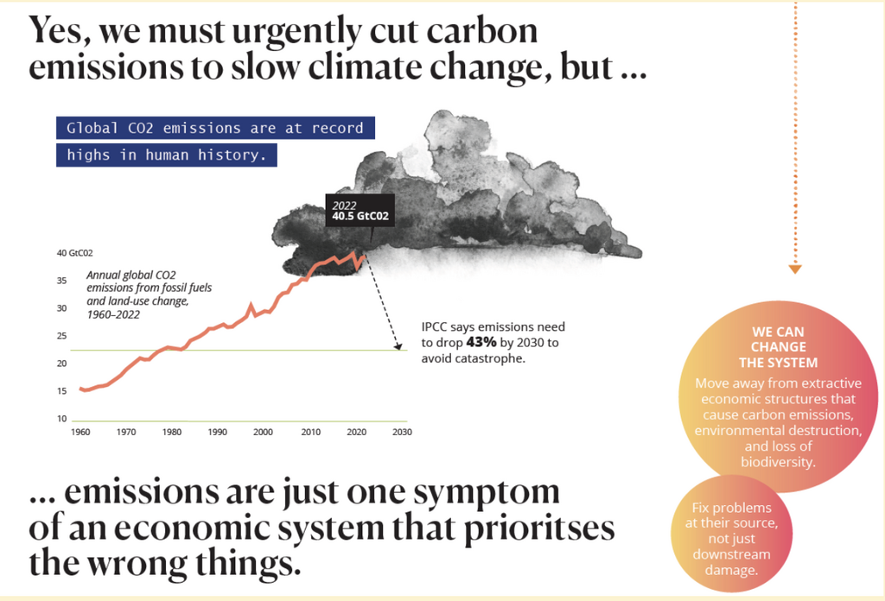
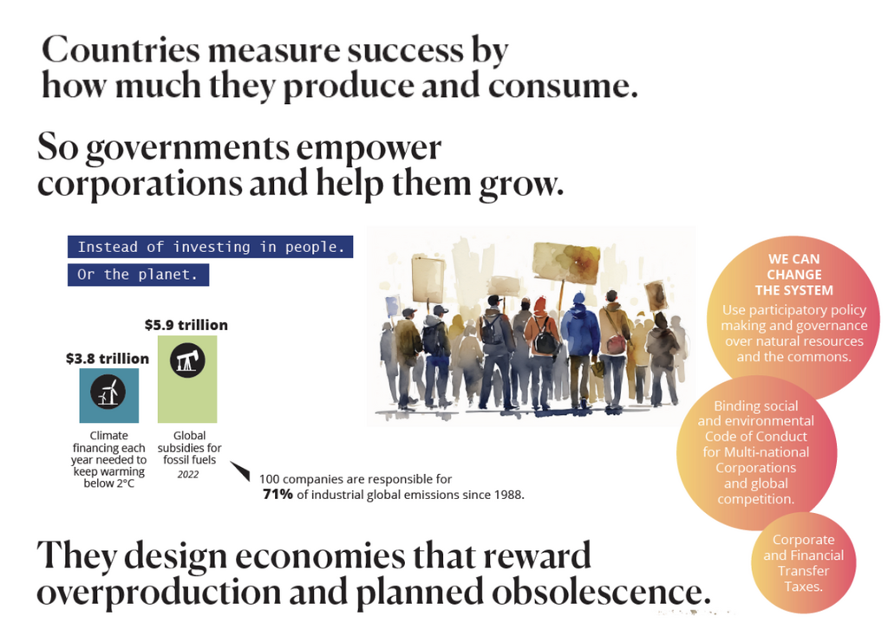
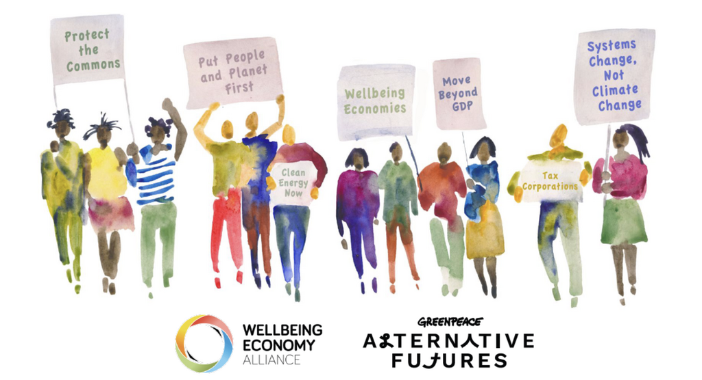
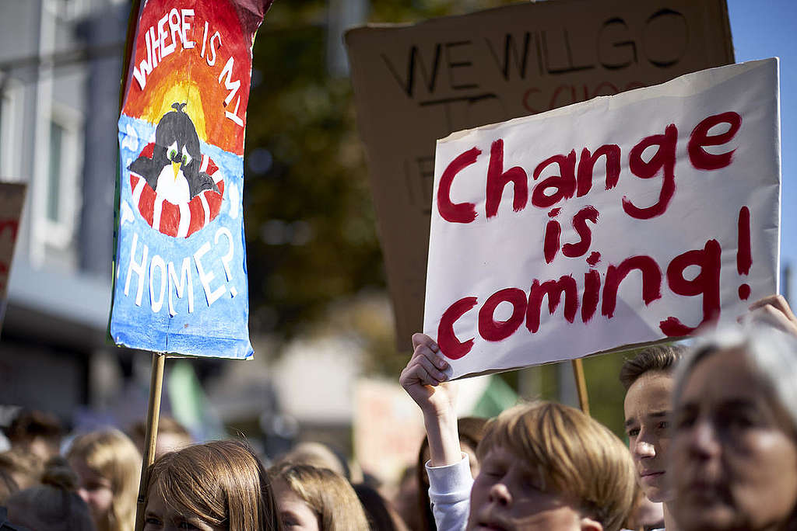

ON SOURCE: GREENPEACE
Earth needs a systems change that prioritises wellbeing
Sandra Laso8 Dec 2023 • 4 min read
We are currently facing the failure of a system based on infinite growth that puts profit before care for people and the planet. A system that is highly dependent on fossil fuels, natural resources extraction, overproduction and overconsumption. All of this is fuelling the climate crisis, biodiversity loss and massive pollution which in turn has resulted in a higher cost of living, worsening living standards, climate migrations, and a war for resources.

© Wellbeing Economy Alliance (WEAll)
The Power Dynamics in Multilateral Spaces
Multilateral spaces like COP28 in UAE, organised by the United Nations Framework Convention on Climate Change (UNFCCC), serve as crucial platforms for global leaders to unite and move essential climate actions forward. Yet even in these spaces, where the sovereignty of member states should prevail, the world’s dominant power dynamics are mirrored through corporate capture and noticeable conflicts of interest, false solutions and greenwashing, or with plain opposition to environmental protection.
It’s time to break this pattern and explore real alternatives towards a future that ensures a liveable planet, redefines wellbeing all together, and where humans and nature are seen as one.

© Wellbeing Economy Alliance (WEAll)
Opportunities for Transformative Change
We know another way is possible, we don’t need to reinvent the wheel to make change. There are already communities and grassroots movements practising alternatives that prioritise care and wellbeing at their core, offering us hope that other realities are possible. We need to keep learning from the traditional knowledge and lived experience of these communities, which are too often marginalised and ignored, but hold answers to the global challenges created by the dominance of Western world views.
Greenpeace collaborated with academics, organisations and activists from around the world to collect their perspectives in a publication called Growing the Alternatives: Societies for a Future Beyond GDP. The publication explores political alternatives and economic scenarios, analyses market facing alternatives, and visits 21 examples that set the path for the futures we want to build. These alternatives offer a departure from the status quo and prioritise the collective good over individual gains.
Moving Forward: Disrupting Power Dynamics
Amplifying these solutions are a key part of using political opportunities like the COP to push for policies and practices that tackle the root causes of the polycrises. For instance, taking action on the global finance mechanisms, which are a cornerstone of global cooperation on climate change, or ending tax havens and corporate lobbyists’ influence on global tax policies and systems. These are pathways to ensure the equality and power distribution that are essential to a wellness economy are priorities.

© Wellbeing Economy Alliance (WEAll)
We need more good news such as the UN General Assembly adopting plans for historic tax reforms, which will completely change how global tax rules are decided. This is a historic victory that will benefit people from all over the world. The great majority of countries have declared that they are ready to start negotiating tax rules at the UN instead of traditional spaces like the OECD, which are mostly led by the rich countries.
Likewise, the finance pledges for financing of the Loss and Damage Fund at COP28 must be followed by governments agreeing on new and added climate finance, and lay the groundwork for a goal that is adequate in scale and scope. The elite and the polluters must pay, but we can’t stop at just enough.
We must disrupt existing power dynamics, avoiding approaches that reinforce the status quo of powerful economies while perpetuating the cycle of debt for the global south through loans instead of grants. Debt-for-nature swaps — proposed by the new taskforce being launched by MDBs, or multilateral development banks, at COP 28 — cannot be a substitute for real debt restructuring and a comprehensive reform of the international financial architecture.
It is as crucial to get the rich countries to pay back their fair share to the poorest and most vulnerable countries for the harm they have caused, as it is to ensure a democratic and inclusive global economic governance. We need a systems change that puts the wellbeing of people and the planet at its core.
Open on original site ↗Visit here for the full infographic made in partnership with the Wellbeing Economy Alliance (WEAll).

Challenge the idea that there is only one economic model that all countries must follow.
Sandra Laso is a Project Manager with Alternative Futures at Greenpeace International.
ON SOURCE: GREENPEACE